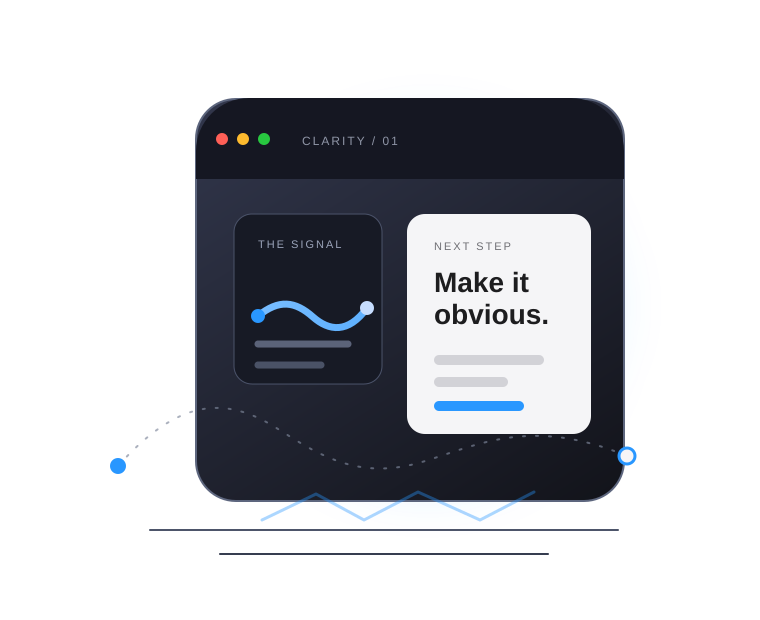

Build the product.
Mobile apps, web apps, websites, and the interfaces people use every day.
I build mobile apps, web apps, and websites — and help teams debug, improve, and ship the code behind them.

Start here
Choose the closest match and I’ll point you toward a useful first step.
We can shape the problem, define the essential workflow, and decide what is worth building first.
Start with the contextFrom a first version to a stubborn bug, I help turn a digital problem into a working next step.
Mobile apps, web apps, websites, and the interfaces people use every day.
Debug errors, untangle broken flows, and improve an existing codebase without losing the useful parts.
Integrate APIs, data, services, and automations so the product works as one system.
A clear idea, a broken feature, or a product that needs a stronger next version.
Turn an idea or brief into a working app, web app, or website.
Find and fix bugs, confusing behavior, and implementation issues in an existing project.
Add features, connect services, and keep a working product moving.
The work stays focused, reviewable, and connected to the decision that matters next.
We define what needs to become true and what can wait.
We turn the direction into a focused experience and a practical system.
We build a reviewable milestone and leave the next decision visible.
Each engagement should make the next conversation easier, inside the team and with the people using the product.
The strongest projects begin when a team knows what feels stuck, even if the answer is not clear yet.
Share what exists, what feels stuck, and what needs to become clearer. That is enough to start.
Start with the contextShort observations about preserving the useful parts while a product finds its real shape.
What to keep when the idea changes.
Talk about your versionEnough context to decide whether a first conversation would be useful.
Mobile apps, web apps, websites, and the systems that support them.
I will read the context, reply with whether I am the right fit, and suggest a useful first step.
Yes. I can work alongside product, design, and engineering teams or take on a focused workstream.
Share only what you are comfortable sharing at first. Confidential details can wait until there is a fit and an appropriate agreement.
A few lines are enough: what it is, where it stands, and what feels stuck.